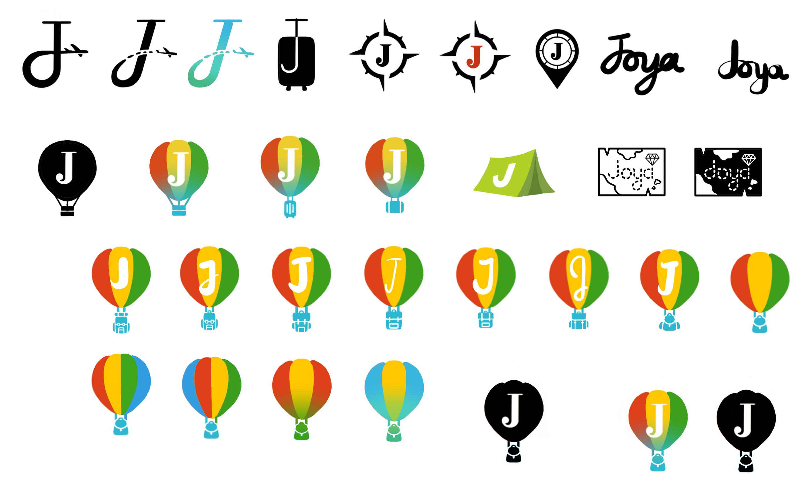
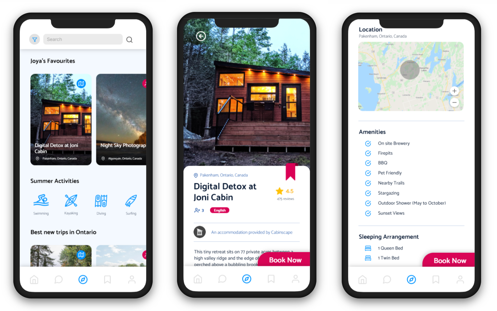

Joya Travel & Lifestyle is a platform for both traveling enthusiasts looking for unique and authentic experiences and passionate locals willing to turn what they love into a business. People that have unique experiences to provide can become a provider by listing their different types of services such as adventure, accommodation and experiences onto Joya’s app platform. Travelers on the other hand, can book these authentic trips provided by lovely locals by using the Joya app.
Since the Covid-19 pandemic has started, traveling has been extremely restricted and unrecommended. As a result, the team retracted and used this time to refine the core and structure of the product. Redeveloping the brand image is a huge part. A designer in this team is in charge of creating this brand image and building a representation for better brand recognition to the public. With feedback from the team, the Logo design, website design and the app design have been completed using Figma and Framer, which is all discussed in more detail below.
To start brainstorming about brand concepts, the team presented their old logo, websites, and filled conveyed the company’s core goals and messages. After understanding and getting on the same page as the rest of the team, it seemed that the brand theme they have created does not do a good job in matching with their brand identity.
Above are the brand’s old logo and their old home page header (the company used to be called Tugolo before the team changed it to Joya Travel). Together, the logo and homepage is emitting the atmosphere of a very rigid, organized, and strict travel company. They chose to go with a dark theme consisting mainly of black and white because it was clean looking and professional. Although that is true, it is not what one imagines a company like Joya Travel to look like. As a travel platform constructed to provide unique travel experiences unlike other big travel companies, these experiences are more adventure-like, more authentic, and target towards more adventurous and more curious people. Therefore, the concept of this company’s brand should be colourful, to represent the colourful experiences it provides and to convey the excitement of traveling to the viewer. The brand should also look authentic just like the experience providers, it should be welcoming and communicate that feeling closer to home. Finally, the brand should convey that adventurous feeling to the customers, that feeling of wanting to grab the backpack and head out to explore the world.
As the icon of the company and the face that will appear everywhere representing the company, the logo design is crucial to setting the base for a brand. Tubik Studio even described the logo as the basic mark of brand identity, the most prominent symbol of brand image and the foundation of effective marketing strategy enabling its connection with the target audience (Tubik Studio, 2017).
After searching for some inspirations, the logo designs shown above were drafted. Starting from the top left corner, the exploration began by conserving the old theme of black and white and experimented with the initial “J”. The tail of the J drags off to becoming the tail of an airplane, symbolizing travel. Clean and professional as it is, the logo reminds me of Tik Tok and does not convey the adventurous feeling wanted. The experiment continued with the suitcase logo, the compass logo, the map pin logo and the handwritten “Joya” script, and it was not until the hot air balloon logo was created before the adventurous and authentic atmosphere started to emit. The inspirations went on and the Shopify Tent was created, as it is created with the Shopify colours and font, and made two treasure map logos, but none of them stick to me as much as the hot air balloon of joy. The four-colour combination, the backpack it is carrying, none of the others convey the same atmosphere as the hot air balloon. After showing the team my logos and communicating my insights, many rounds of voting passed and the team has decided to move forward with the hot air balloon.
As the icon of the company and the face that will appear everywhere representing the company, the logo design is crucial to setting the base for a brand. Tubik Studio even described the logo as the basic mark of brand identity, the most prominent symbol of brand image and the foundation of effective marketing strategy enabling its connection with the target audience (Tubik Studio, 2017).
After searching for some inspirations, the logo designs shown above were drafted. Starting from the top left corner, the exploration began by conserving the old theme of black and white and experimented with the initial “J”. The tail of the J drags off to becoming the tail of an airplane, symbolizing travel. Clean and professional as it is, the logo reminds me of Tik Tok and does not convey the adventurous feeling wanted. The experiment continued with the suitcase logo, the compass logo, the map pin logo and the handwritten “Joya” script, and it was not until the hot air balloon logo was created before the adventurous and authentic atmosphere started to emit. The inspirations went on and the Shopify Tent was created, as it is created with the Shopify colours and font, and made two treasure map logos, but none of them stick to me as much as the hot air balloon of joy. The four-colour combination, the backpack it is carrying, none of the others convey the same atmosphere as the hot air balloon. After showing the team my logos and communicating my insights, many rounds of voting passed and the team has decided to move forward with the hot air balloon.

The design is then transferred onto Figma and continued to be experimented with the colours and shades as shown above. Later for simplicity and more iconic effect, the team decided to drop the letter “J” in the center and have voted the third colour combination. Finally, a logo that conveys the core identity of the company, a symbol that represents adventures and joy, the new logo for Joya Travel has been born.
After a logo is decided, the brand’s colour pallets are set. Along with the chosen font style, the brand theme is almost complete. The website is one of the most representative aspects of a brand identity. Especially if the product is digital, like the Joya Travel App, the customers will definitely check the website out before deciding to do business with us. The website is where the brand identity should come through in full force (deBara, 2017). The next step then is to design a website for Joya Travel that tells the viewers who we are and promote the app that is the product.
To start off, a very exaggerated version of the adventurous style website was experimented on and the result is as shown in the right. This design is very lively and almost cartoonish in nature. A lot is happening on the page, there are lots of colours and elements of traveling, however it is way too complex to be a good website design. The main navigation of this site is guided by a stripe consisting of the three brand colours from the logo. As the line progresses down the page, the viewer is shown the content of the page section by section. From land to sea, displaying the joy and diversity of travelling. As a main principle of good website design in 2020, simplicity is crucial. Putting too many elements on the page can be very distracting to visitors from the main purpose of one’s website. Simplicity always works in an effective web page design. Clean and fresh design the website not only makes the website appealing but also helps the user to navigate from one page to another seamlessly. One should always keep the design as simple as possible so that the visitors can feel it easy-to-use and can find their ways easily (Pawar, 2018).

With feedback from the rest of the team and more research, the final draft of the website design was created. With more pictures and less cartoon illustrations, the site is now a lot more clean and easy to navigate. The choice of a dark background colour is to allow the pictures, which are the selling-point of a travel company, to pop out more. If the pictures can catch a viewers’ eyes, then they are more likely to scroll down for more. The style of the website is also kept consistent from page to page. By choosing a few bold colors and consistently using them throughout the design, what is created is an immediately recognizable combination that will stay in memories of those who see it for a long time (Burns, 2020).
As the core product of Joya Travel, as the platform all of the users will see and use everytime they open the app, Mobile Application Design is of crucial importance to the company and that is why it is such a huge part of branding. The definition of branding has already been given as a set of marketing and psychological techniques and steps to promote a product, service, persona, etc. setting a brand. In its turn, a brand is an image created with a set of distinguishing features and promoting awareness and recognizability of the product or service on the market, it is what people think and know about it. Along these lines, mobile app marketing is the way clients will see the application collaborating with it: its visual picture, its correspondence, and its notoriety. (Yalanska, 2020).
The design started off to be very complicated, just like how the website design started off. The attempt of trying to put everything this app can do right in front of the users’ faces was driving the design to be way too cluttered. Fusing such a large number of highlights in the application can be one reason that clients dump the application and never return. This can distract users from the core idea of the app. Furthermore, one does not want users to focus on any ideas other than the core idea of the app. Choose a few primary features which are required to launch the app first and focus on engaging users on those features (Design, 2019).
As a result, the app design took a standard navigation pattern. It is better to use standard navigation patterns, such as the tab bar (for iOS) and the navigation drawer (for Android). Most of the users know about both navigation designs and will instinctively realize how to get around the application. (Babich, 2018). The features are reduced down to 5 tabs on the app: Home, Contact, Explore, Bookmarked and Profile. Only the Explore tab design is completed at this moment while the rest are still under development. The design for the Explore tab is completed with very consistent and simple elements, giving the users just enough to show what they need to see.
Here is the current design with colours and fonts and all those other design elements: they can only be effective and leave a positive branding effect if they are consistent. This goes for other graphics, navigation and the content as well. Being consistent throughout the app will look professional and better allow users to develop a relationship with the app and the brand (Paish, 2018).
The process of rebranding a brand has many crucial steps that require lots of researching, designing, testing and redesigning. To build a successful brand, one must take into consideration the viewers' and users’ perspective and find a way to best leave a good impression, convey the message, and appeal to the target audience. This process might be long, and the work here is still not complete, but there are no steps to skip. The designs will continue to shift shapes until it is in its best form for the audience.